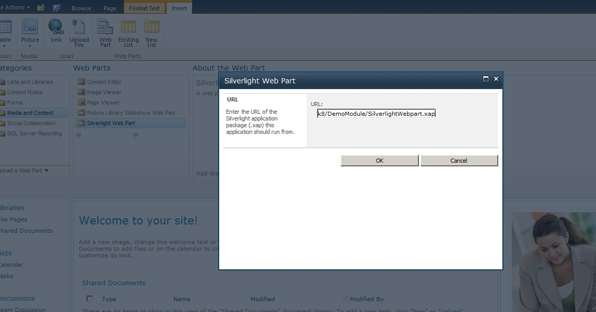
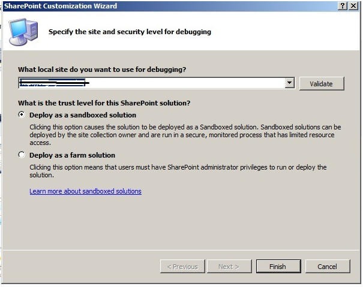

Silverlight - Sharepoint integration (CSSharePointSilverlightIntegration)
How to use Silverlight along-with SharePoint (VBSharePointSilverlightIntegration)
Introduction
The project shows how to use Silverlight along-with SharePoint.
A Silverlight application can be hosted inside a SharePoint site and it is called as a Silverlight WebPart.
Running the Sample
Please follow these demonstration steps below.
Step 1: Open the VBSharePointSilverlightIntegration.sln then right click the SharePoint project to edit the "Site Url" to your own.
Step 2: Right-click the "VBSharePointSilverlightIntegration" project and click "Deploy".
Step 3: Open the SharePoint site in the browser and select "Page".

Step 4: Select Edit.

Step 5: Having done that Select "Insert" tab and click "Web Part".

Step 6: In "Categories", select "Media and content" and correspondingly in "Web Parts" column, Select "Silverlight Web Part" Having Selected the "Silverlight Web Part", click on "Add" button that appears on the right side.

Step 7: After clicking add, a small pop-up will appear asking for the URL of the Silverlight content(.xap) file. Enter the URL in the following format as:
http://YourPointSite/DemoModule/SilverlightWebpart.xap

Step 8: Then click OK and then you can see your Silverlight web part appear in the SharePoint site as:

Step 9: As you can see the blue border is the boundary of the Silverlight web part and the Silverlight application has a button in it. When you click the button, it acts like a normal Silverlight application and responds to the user interaction
and a Message Box is popped, for which we wrote code in "MainPage.xaml.cs".

Using the Code
Code Logical:
[Prerequisites]
Microsoft SharePoint Foundation 2010
Step1: Create a VB Empty SharePoint Project in Visual Studio 2010 and name it as "VBSharePointSilverlightIntegration".

<UserControl x:Class="SilverlightWebpart.MainPage"
xmlns="http://schemas.microsoft.com/winfx/2006/xaml/presentation"
xmlns:x="http://schemas.microsoft.com/winfx/2006/xaml"
xmlns:d="http://schemas.microsoft.com/expression/blend/2008"
xmlns:mc="http://schemas.openxmlformats.org/markup-compatibility/2006"
mc:Ignorable="d"
d:DesignHeight="300" d:DesignWidth="400">
<Grid x:Name="LayoutRoot" Background="White">
<Button Name="btnClk" Height="20" Width="50" Content="Click !!" Click="btnClk_Click"></Button>
</Grid>
</UserControl>
<UserControl x:Class="SilverlightWebpart.MainPage"
xmlns="http://schemas.microsoft.com/winfx/2006/xaml/presentation"
xmlns:x="http://schemas.microsoft.com/winfx/2006/xaml"
xmlns:d="http://schemas.microsoft.com/expression/blend/2008"
xmlns:mc="http://schemas.openxmlformats.org/markup-compatibility/2006"
mc:Ignorable="d"
d:DesignHeight="300" d:DesignWidth="400">
<Grid x:Name="LayoutRoot" Background="White">
<Button Name="btnClk" Height="20" Width="50" Content="Click !!" Click="btnClk_Click"></Button>
</Grid>
</UserControl>
using System; using System.Collections.Generic; using System.Linq; using System.Net; using System.Windows; using System.Windows.Controls; using System.Windows.Documents; using System.Windows.Input; using System.Windows.Media; using System.Windows.Media.Animation; using System.Windows.Shapes; namespace SilverlightWebpart { public partial class MainPage : UserControl { public MainPage() { InitializeComponent(); } private void btnClk_Click(object sender, RoutedEventArgs e) { MessageBox.Show("Hello from Silverlight within SharePoint !!"); } } }
using System; using System.Collections.Generic; using System.Linq; using System.Net; using System.Windows; using System.Windows.Controls; using System.Windows.Documents; using System.Windows.Input; using System.Windows.Media; using System.Windows.Media.Animation; using System.Windows.Shapes; namespace SilverlightWebpart { public partial class MainPage : UserControl { public MainPage() { InitializeComponent(); } private void btnClk_Click(object sender, RoutedEventArgs e) { MessageBox.Show("Hello from Silverlight within SharePoint !!"); } } }
copy "$(TargetDir)SilverlightWebpart.xap" "$(SolutionDir)VBSharePointSilverlightIntegration\DemoModule
copy "$(TargetDir)SilverlightWebpart.xap" "$(SolutionDir)VBSharePointSilverlightIntegration\DemoModule


Step11: Build the entire solution and then try to deploy the "VBSharePointSilverlightIntegration" project to the SharePoint site. Then you can test it.
Why brings Silverlight and SharePoint together?
•Users are expecting rich, compelling interfaces.
Silverlight is a perfect technology to create Web 2.0 applications in SharePoint
•Limit page post backs.
Silverlight applications do their processing on the client, eliminating page post backs.
•Silverlight applications offload processing to the client.
Processing on the client reduces the load on the SharePoint server farm.
•Silverlight isolates processing on the client
•Separation of design and code.
You can use the MVVM pattern to separate the presentation from the processing later. This makes it easy to change the look and feel of Silverlight applications.
•Common .NET development techniques.
Silverlight applications are based on the .NET framework which makes it easy for .NET developers to create them. The client object model may be used to access SharePoint resources from a Silverlight application.
•Overcome Sandbox limitations.
Silverlight applications may be used to overcome sandboxed limitations such as the ability to call an external service, or use parts of the .NET framework which are not permitted to run in a sandboxed solution.
•Ease of deployment.
Silverlight applications are very easy to deploy. Anyone with the ability to upload a document to a document library can deploy a Silverlight application to a SharePoint site. Additionally, the Silverlight Web Part makes it very easy to place Silverlight applications
on SharePoint web pages.